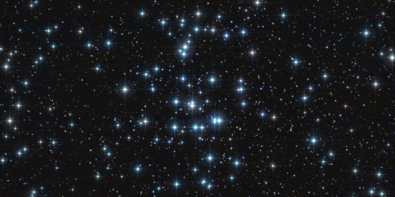

Las estrellas son cuerpos celestes gigantes, compuestos principalmente por hidrógeno y helio, que producen luz y calor desde sus arremolinadas fundiciones nucleares. Aparte del Sol, todos los puntos luminosos que vemos en el cielo se encuentran a años luz de la Tierra. Las estrellas son los bloques de construcción de las galaxias, y existen mil millones en el universo. Es imposible saber cuántas estrellas hay, pero los astrónomos calculan que solo en la galaxia de la Vía Láctea hay aproximadamente 300 mil millones.
Nace una estrella
El ciclo de vida de una estrella dura mil millones de años. En general, mientras más grande sea una estrella, más corto es su tiempo de vida.
El nacimiento de una estrella ocurre dentro de las nebulosas, que son nubes de polvo constituidas por hidrógeno. A lo largo de miles de años, la gravedad provoca que las cavidades de materia densa dentro de la nebulosa colapsen bajo su propio peso. Una de estas masas de gas que se contrae, denominada protoestrella, representa la etapa naciente de la estrella. Debido a que el polvo de las nebulosas las oculta, las protoestrellas son difíciles de detectar.
A medida que una protoestrella se hace más pequeña, gira más rápido debido a la conservación del momento angular (el mismo principio que explica por qué aumenta la velocidad a la que un patinador gira cuando aprieta sus brazos). La presión en aumento provoca temperaturas elevadas, y durante este tiempo, una estrella ingresa en lo que se denomina la fase T Tauri, una etapa relativamente breve.
Millones de años después, cuando la temperatura del núcleo llega a los 27 millones de grados Fahrenheit (es decir, 15 millones de grados Celsius), la fusión nuclear comienza, encendiendo el núcleo y desencadenando la próxima (y más larga) fase de la vida de una estrella, conocida como la secuencia principal.
La mayor parte de las estrellas de nuestra galaxia, incluyendo al Sol, se clasifican como estrellas de secuencia principal. Existen en un estado estable de fusión nuclear, en el que transforman al hidrógeno en helio e irradian rayos X. En este proceso se emite una gran cantidad de energía, ya que se mantiene alta la temperatura de la estrella, que brilla intensamente.
Todo lo que brilla
Algunas estrellas brillan más que otras. Su brillo es un factor que depende de cuánta energía irradien (es decir, su luminosidad) y de cuán lejos de la Tierra se encuentren. El color de las estrellas también puede variar, porque su temperatura no es siempre la misma. Las estrellas más calientes son blancas o azules, mientras que las más frías son de tonos naranjas o rojos.
Al graficar estas y otras variables en un esquema que se denomina diagrama de Hertzsprung-Russell, los astrónomos pueden clasificar las estrellas en grupos. Además de las estrellas de secuencia principal y las enanas blancas, podemos mencionar otros grupos, como las estrellas enanas, las gigantes y las supergigantes. Las supergigantes pueden llegar a tener un radio mil veces mayor al del mismísimo Sol.
El 90 por ciento del tiempo de vida de las estrellas transcurre en la fase de secuencia principal. El Sol terrestre, de unos 4,6 mil millones de años de antigüedad, es una estrella enana amarilla de tamaño promedio; y los astrónomos prevén que continuará en la fase de secuencia principal por algunos miles de millones de años más.
A medida que avanza la vida de las estrellas hacia el final, gran parte de su hidrógeno se convierte en helio. El helio desciende hacia el núcleo de la estrella, aumentando su temperatura y provocando que su capa externa de gases calientes se expanda. Estas estrellas inmensas y expansivas se denominan gigantes rojas. Hay muchas formas en las que la vida de una estrella puede finalizar, y su destino depende de cuán gigante sea.
La fase de gigante roja es, en realidad, el paso previo a que una estrella se desprenda de sus capas externas y se convierta en un cuerpo pequeño y denso denominado enana blanca. Las enanas blancas enfrían su temperatura durante mil millones de años. Algunas, si existen como parte de un sistema de estrellas binarias, pueden acumular la materia excedente de sus estrellas compañeras hasta que sus superficies exploten; y así se producen las novas brillantes. Con el tiempo, todas las enanas blancas se oscurecen y dejan de producir energía. En ese momento, que los científicos aún no han observado, pasan a denominarse enanas negras.
Una gran explosión
Las estrellas masivas evaden esta evolución estelar, y en cambio, se apagan con una explosión. Así es como surgen las supernovas. Si bien superficialmente pueden parecer gigantes rojas en expansión, sus núcleos están contrayéndose, y con el tiempo su densidad es tal que colapsan, y producen una explosión estelar. Estas explosiones catastróficas dejan un pequeño núcleo que puede convertirse en una estrella de neutrones, e incluso, si el remanente es lo suficientemente masivo, en un agujero negro.
Debido a que determinadas supernovas tienen patrones previsibles de destrucción y de luminosidad resultante, los astrónomos las utilizan como “luces estándar”, o instrumentos de medición astronómica, que los ayudan a medir las distancias en el universo y a calcular su velocidad de expansión.